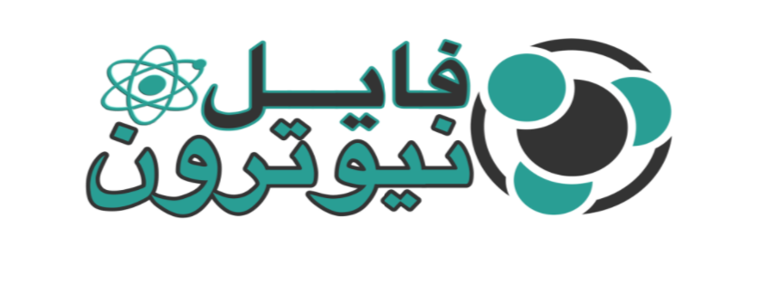

Newterm Themes Manager
: الوصف
تخصيص الوان الخط في اداة الوحدة الطرفية الشهيرة
NewTerm
سكرين شوت
المعلومات
Newterm Themes Manager : الاسم
قسم : التعديلات النهائية
الحجم : 30020 بايت
0.0.2E~stable : الاصدار
com.protonfile.newtermtm : المعرف

by @elhizazi1 © 2021